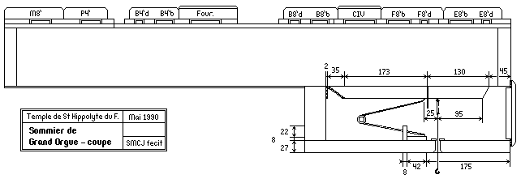
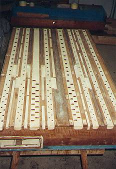

Grand Temple de l'Église Réformée
La mécanique.
Le sommier de
|
|
|



Coupe du sommier de Grand Orgue avec sa composition originale, savoir :
|
Intérieur de la laye |
|
|||||||||||||||||||||
|
|||||||||||||||||||||
|
|
 Sommier en cours de restauration |
|
Ces soupapes longues et assez larges sont caractéristiques
de BEAUCOURT et VOEGELI et responsables de
mécaniques lourdes, quelquefois même beaucoup trop dures. (cf. le Relevé du système de tirage de soupape de l'orgue d'Allauch par Pierre CHÉRON |
| Montre 8' |
Prestant 4' |
Flûte 4' |
Fourniture III-V |
Bourdon 8' |
Cornet IV |
Flûte 8' |
Trompette 8' |
||
|---|---|---|---|---|---|---|---|---|---|
| 1 | C 1 | 23.0 | 17.0 | 15.0 | 28.0 | 22.0 | 18.0 | 23.0 | |
| 2 | D 1 | 23.0 | 17.0 | 14.0 | 26.0 | 21.0 | 17.0 | 23.0 | |
| 3 | E 1 | 22.0 | 17.0 | 13.0 | 24.0 | 21.0 | 15.0 | 22.0 | |
| 4 | F# 1 | 21.0 | 16.0 | 12.0 | 24.0 | 19.0 | 15.0 | 21.0 | |
| 5 | G# 1 | 20.0 | 15.0 | 11.0 | 22.0 | 18.0 | 14.0 | 19.0 | |
| 6 | Bb 1 | 17.0 | 14.0 | 10.0 | 21.0 | 17.0 | 12.0 | 18.0 | |
| 7 | C 2 | 19.0 | 13.0 | 10.0 | 23.0 | 16.0 | 12.0 | 17.0 | |
| 8 | D 2 | 19.0 | 12.0 | 10.0 | 23.0 | 15.0 | 11.0 | 17.0 | |
| 9 | E 2 | 17.0 | 11.0 | 9.5 | 22.0 | 14.0 | 10.0 | 16.0 | |
| 10 | F# 2 | 16.0 | 10.0 | 9.0 | 20.0 | 13.0 | 10.0 | 15.0 | |
| 11 | G# 2 | 15.0 | 10.0 | 8.5 | 21.0 | 12.0 | 9.0 | 13.0 | |
| 12 | Bb 2 | 13.0 | 9.0 | 8.0 | 19.0 | 11.0 | 9.0 | 11.0 | |
| 13 | C 3 | 11.0 | 9.0 | 7.5 | 24 × 19 | 10.0 | 26 × 19 | 9.0 | 10.0 |
| 14 | D 3 | 11.0 | 8.0 | 7.0 | 24 × 17 | 10.0 | 26 × 18 | 8.5 | 10.0 |
| 15 | E 3 | 11.0 | 8.0 | 6.0 | 24 × 17 | 9.0 | 26 × 17 | 8.5 | 10.0 |
| 16 | F# 3 | 10.0 | 7.0 | 6.0 | 24 × 17 | 9.0 | 26 × 16 | 8.0 | 9.5 |
| 17 | G# 3 | 10.0 | 7.0 | 6.0 | 24 × 16 | 8.0 | 26 × 15 | 7.5 | 9.5 |
| 18 | Bb 3 | 9.0 | 6.5 | 5.5 | 24 × 16 | 8.0 | 26 × 14 | 7.0 | 9.5 |
| 19 | C 4 | 9.0 | 6.5 | 5.5 | 24 × 14 | 7.5 | 26 × 14 | 6.5 | 9.0 |
| 20 | D 4 | 8.0 | 6.0 | 5.5 | 24 × 14 | 7.0 | 26 × 13 | 6.5 | 9.0 |
| 21 | E 4 | 8.0 | 6.0 | 5.0 | 24 × 13 | 6.5 | 26 × 13 | 6.5 | 9.0 |
| 22 | F# 4 | 7.0 | 5.5 | 5.0 | 24 × 13 | 6.0 | 26 × 13 | 6.0 | 9.0 |
| 23 | G# 4 | 7.0 | 5.5 | 5.0 | 24 × 12 | 6.0 | 26 × 13 | 6.0 | 9.0 |
| 24 | Bb 4 | 7.0 | 5.5 | 4.5 | 24 × 12 | 6.0 | 26 × 12 | 6.0 | 9.5 |
| 25 | C 5 | 7.0 | 5.5 | 4.5 | 24 × 12 | 6.0 | 26 × 12 | 5.5 | 9.5 |
| 26 | D 5 | 6.0 | 5.0 | 4.5 | 24 × 11 | 5.5 | 26 × 11 | 5.5 | 9.5 |
| 27 | E 5 | 6.0 | 5.0 | 4.5 | 24 × 11 | 5.5 | 26 × 11 | 5.0 | 9.5 |
| Sommier du côté C | Sommier du côté C# | ||||
|---|---|---|---|---|---|
| Largeurs des gravures |
Division du sommier |
Largeurs des gravures |
Division du sommier |
||
| 67.0 | 67.0 | ||||
| C 1 | 25.0 (*) | 141.0 | C# 1 | 26.0 (*) | 145.0 |
| D 1 | 25.0 (*) | 133.0 | Eb 1 | 25.0 (*) | 132.0 |
| E 1 | 25.0 (*) | 121.0 | F 1 | 25.0 (*) | 120.0 |
| F# 1 | 23.0 (*) | 113.0 | G 1 | 23.0 (*) | 113.0 |
| G# 1 | 23.0 (*) | 107.0 | A 1 | 23.0 (*) | 107.0 |
| Bb 1 | 23.0 (*) | 98.0 | B 1 | 23.0 (*) | 99.0 |
| C 2 | 21.0 (*) | 90.0 | C# 2 | 21.0 (*) | 87.0 |
| D 2 | 21.0 (*) | 83.0 | Eb 2 | 21.0 (*) | 85.0 |
| E 2 | 21.0 | 78.0 | F 2 | 22.0 (*) | 76.0 |
| F# 2 | 21.0 | 72.0 | G 2 | 21.0 | 70.0 |
| G# 2 | 21.0 | 76.0 | A 2 | 21.0 | 68.0 |
| Bb 2 | 19.0 | 102.0 | B 2 | 21.0 | 102.0 |
| C 3 | 19.0 | 55.0 | C# 3 | 18.0 | 54.0 |
| D 3 | 17.0 | 50.0 | Eb 3 | 17.0 | 47.0 |
| E 3 | 17.0 | 47.0 | F 3 | 17.0 | 46.0 |
| F# 3 | 15.0 | 41.0 | G 3 | 15.0 | 42.0 |
| G# 3 | 15.0 | 38.0 | A 3 | 15.0 | 37.0 |
| Bb 3 | 15.0 | 35.0 | B 3 | 15.0 | 33.0 |
| C 4 | 12.0 | 33.0 | C# 4 | 14.0 | 33.0 |
| D 4 | 12.0 | 33.0 | Eb 4 | 12.0 | 33.0 |
| E 4 | 12.0 | 32.0 | F 4 | 12.0 | 32.0 |
| F# 4 | 12.0 | 30.0 | G 4 | 12.0 | 32.0 |
| G# 4 | 10.0 | 30.0 | A 4 | 10.0 | 30.0 |
| Bb 4 | 10.0 | 30.0 | B 4 | 10.0 | 29.0 |
| C 5 | 10.0 | 30.0 | C# 5 | 10.0 | 29.0 |
| D 5 | 10.0 | 30.0 | Eb 5 | 10.0 | 29.0 |
| E 5 | 10.0 | 57.0 | F 5 | 10.0 | 57.0 |